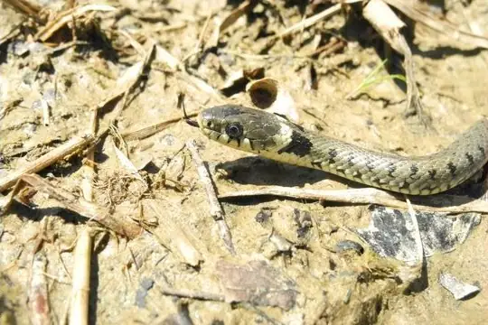
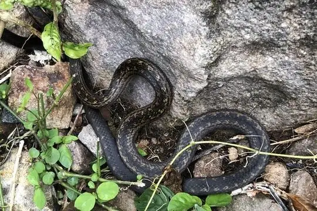

Snakes of Netherlands
5 living snake species are recorded in the Netherlands in SnakeList: 1 venomous and 4 non-venomous, from 2 families.
- 5living species
- 1venomous
- 4non-venomous
- 2families
These totals count the unique living snake species SnakeList records in the Netherlands. Territories that SnakeList lists as places of their own (Aruba, Curaçao, Sint Maarten) have their own pages and are not counted here. A species counts if it is recorded anywhere in the country, so not every snake lives in every part of it.
Species
Showing 5 species
 European AdderVipera berus
European AdderVipera berus Grass SnakeNatrix natrix
Grass SnakeNatrix natrix
Grass Snake (helvetica)Natrix helvetica
Saba RacerAlsophis rufiventris Smooth SnakeCoronella austriaca
Smooth SnakeCoronella austriaca
No snakes in Netherlands match.
Netherlands’s snakes in numbers
- Families: Colubridae 4, Viperidae 1.
- 1 is recorded in no other country or territory in SnakeList: Saba Racer.
How precisely they are recorded
Of the 5 living species recorded in the Netherlands, 4 are recorded by province in SnakeList’s data; 1 is recorded only for the Netherlands as a whole, so the province pages list it as possible rather than recorded. SnakeList records each species by province, not by exact spot, so a species listed for a province may live in only part of it.
Provinces
The provinces where SnakeList records snakes, with how many living species are recorded in each. Each page has its species, venomous snakes, families, the species found only there, its cities and neighbours.
- Drenthe 3 species
- Flevoland 1 species
- Friesland 3 species
- Gelderland 3 species
- Groningen 1 species
- Limburg 1 species
- North Brabant 3 species
- North Holland 1 species
- Overijssel 2 species
- Saba 1 species
- Sint Eustatius 1 species
- South Holland 1 species
- Utrecht 2 species
No place matches that.
Cities
Its biggest cities, biggest first. SnakeList records snakes by province, not by city, so each city page shows the species recorded in its province and, separately, those only possible there - not species confirmed in the city.